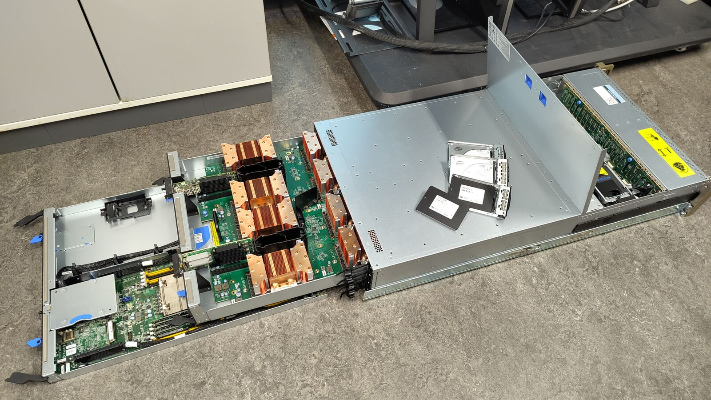
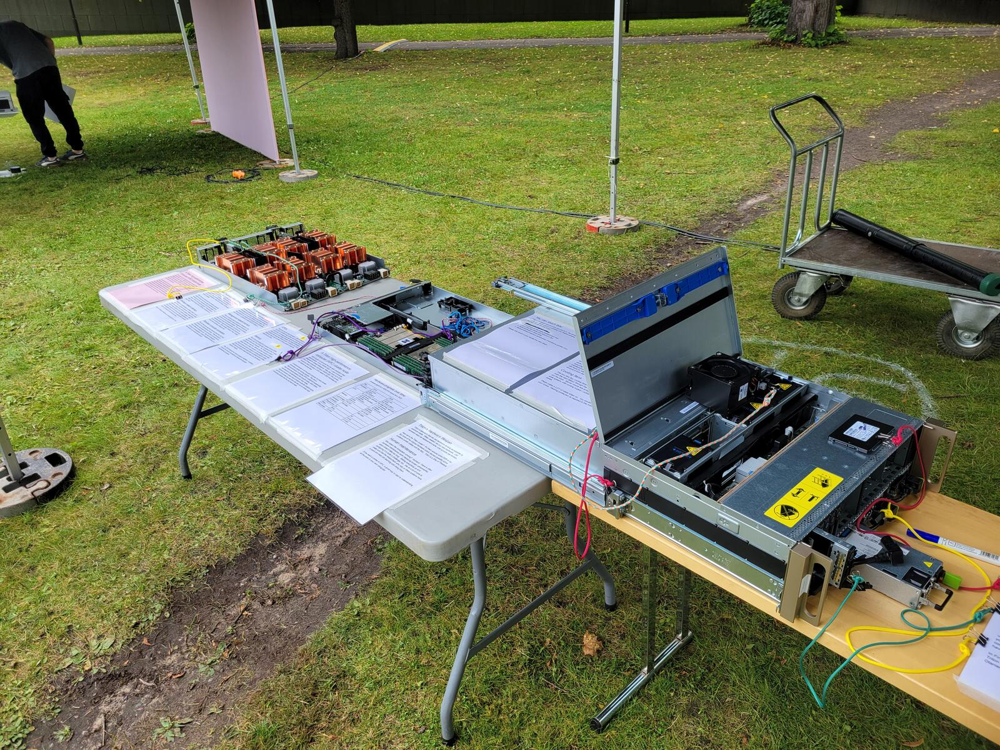
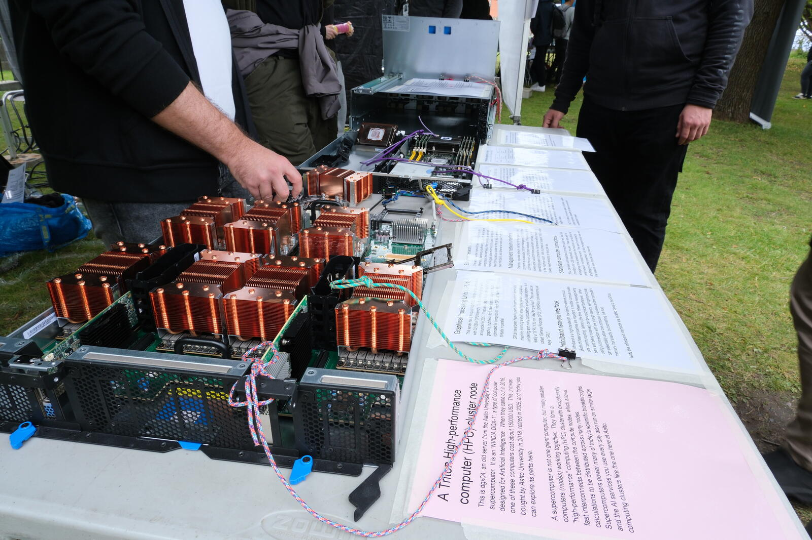

A real NVIDIA DGX-1 — one node from Aalto University's Triton supercomputer — taken apart so you can see how a high-performance AI computer actually works.

We are Aalto Scientific Computing (ASC), the team behind Triton, Aalto University's high-performance computing (HPC) cluster. We build and run the shared supercomputing infrastructure that Aalto researchers use every day for simulation, data analysis, and AI.
At public events like Aalto Day One, we bring out retired hardware — like dgx04, an old Triton node — so anyone can open it up, touch the parts, and see what's actually inside the computers that power modern research and AI.


Aalto Day One, September 2025
Aalto's supercomputing work happens alongside our national and European partners:
Want to know more about us? Visit the Aalto Scientific Computing about page.
This is the online version of the printout displayed next to the server at the booth.
This is dgx04, an old server from the Aalto University's Triton supercomputer. It is an "NVIDIA DGX-1", a type of computer designed for Artificial Intelligence. When they came out in 2016, one of these computers cost about 150000 USD! This unit was bought by Aalto University in 2018, retired in 2025, and today you can explore its parts here.
A supercomputer is not one giant computer, but many smaller computers (nodes) working together. They form a "high-performance" computing (HPC) cluster with exceptionally fast interconnects between the compute nodes, which allows calculations to be distributed across many nodes.
Supercomputers power many of today's scientific breakthroughs, and the AI services you use every day also run on similar large computing clusters like the one here at Aalto.
Despite how it may look, fundamentally this server computer has hardware compatible with any normal desktop or laptop computer: you could take a normal Linux distribution, install it here, and it would mostly work.
The rack-mount system allows a high density of computers. Servers exist in height units of a "U" (44.45mm). They slide in on rails, so that each computer can easily be independently removed, maintained, and replaced. The cases often allow some parts (like hard drives or power supplies) to be replaced without removing the whole node from the rack itself. For more maintenance, the nodes can be partially slid out, maintained, and slid back in, without having to disconnect any cables or fully remove it from the rack.
This box has four cooling fans that pull air in through the front (with the hard disks), through the GPUs and processors, and then out the back. Server rooms are arranged with a cold aisle/hot aisle system, with cooling supply / outtake on the respective aisles.
These make a LOT of noise when on. You wouldn't run this in your home. Hearing protection is required in the machine room.
This is old hardware and you can touch it. Be careful of sharp edges and components or getting your fingers greasy. Can you manage to do the following:
Please only touch if your hands are very clean.
This server has two main processors. (Intel architecture, 2x20 core Xeon E5-2698 v4 @ 2.2GHz) with 20 cores each for a total of 40 cores. An average laptop may have four cores. More cores mean it can do more things in parallel, like having 40 students working at the same time instead of just 4. In order to use GPUs efficiently, there must be plenty of CPUs available to feed the data into the GPUs.
This is error correcting (ECC) computer memory (DDR4 standard), but it has 16 total slots, as opposed to the 2-4 slots found in most home computers. The 16 slots held a total of 512GB when it was new. Memory has been removed to replace broken memory in other computers - we scavenge parts to keep things running as long as possible to minimize electronic waste. Error correcting memory means that it can detect random bit flips. With this much memory always under heavy use, this ensures integrity of results.
The "2133" refers to the memory speed of 1067MHz - in addition to size, the memory bandwidth and latency are important considerations for speed.
This server has 8 Nvidia V100 GPUs with the Volta architecture, with 32 GB of GPU memory. The first Volta products were announced in 2017. The basic idea is like a desktop GPU for graphics, but these don't have graphics outputs and are optimized for computation. Each GPU can handle 5120 compute threads in parallel.
GPUs have been heavily used for computation (especially machine learning and AI) since highly parallelized graphics rendering and many computations are both linear algebra. Is it really a "G"PU if it's not used for graphics? They can also be called "General Purpose GPUs" (GPGPUs), but everyone just says "GPU".
Infiniband is a high-bandwidth, low-latency network protocol. Both of these properties are important: if multiple compute nodes are communicating, latency (the time between a message being sent and being received) can be a significant bottleneck. When using a connection with low enough latency, well-optimized code can essentially allow one computer to access another computer's memory (not exactly, but something like that).
Note the Infiniband interfaces are located close to the GPUs.
This server has two normal Ethernet network connections. Ethernet is standard and efficient, but for high-performance computation the overhead of the operating system handling the network stack is too much and Infiniband is used instead. We have configured our cluster so that all regular network traffic goes over Infiniband, and Ethernet is mainly used for booting up.
There's a separate network interface for management - this connects to a dedicated onboard management computer that controls the main computer's hardware. This allows us to reboot, power cycle, adjust the boot parameters, and see the raw operating system console for maintenance without having to go to the machine room. With hundreds of nodes in Triton, multiple nodes need rebooting or fixing per day.
You can see some standard connectors back here, like VGA (monitor) and USB (keyboard, mouse). These are used for emergency local access when the machine is so stuck that no other network connections work. They aren't connected to anything in normal operation - all daily management is done over the network, even normal crash recovery.
The DGX-1 was sold with 8TB of SSD disk space across 4 disks. Machine learning training requires a lot of data, and one of the bottlenecks can be getting it from the storage to the GPUs. Fast SSDs on the same computer allow huge data transfer rates and random access for randomizing the order for training purposes.
We are very careful about data security. All hard drives were securely erased before being taken for this display.
The front of the server has 20 hard drive slots. They are hot-swappable. With RAID (redundant arrays of independent disks) setup, data is stored with redundancy across disks. If a disk breaks, it can be removed, replaced, and the disk array rebuilt (data copied back to the new disk) to restore redundancy.
The DGX-1 had 4 x 1600W power supplies, with a max power usage of 3200W. Power supplies are redundant: if one broke, you could remove it and replace it without turning off the computer. If you ran this in your home, each power supply would have to be plugged into a separate circuit.
In Finland, waste heat is often used for district heating. In 2026, Triton will move to a facility that will recover waste heat for use in Otaniemi.
Triton is special in that we use hardware as long as possible to minimize waste. When needed, we buy new hardware. Old hardware stays as replacement parts, until all parts are broken.
How old is the Triton cluster? It's been around since 2009 or so. But none of the original hardware exists (except possibly some scattered power cables and the like). Triton is a Ship of Theseus.
Who keeps the computers running? Humans! There is often hardware maintenance work (replacing broken components), which doesn't take too long. Setting everything up and configuring it is quite a challenge, too. We do a lot of work to make sure that the researchers who rely on these systems have a quick and easy job learning and using them.
If you want a career in HPC, a good way to start is understanding all the parts in your own computer.
Compare dgx04 to a H200 GPU server from 2025:
| Category | 2018 (dgx04) | 2025 (H200 server) |
|---|---|---|
| Processor | 2x 20 core 2.2GHz Xeon E5-2698 v4 | 2x 32 core 2.8GHz Xeon Platinum 8562Y+ |
| GPU | 8x V100 GPUs, each with: 32 GB memory 900 GB/s mem bandwidth 14 teraflops 250 Watts power | 8x H200 GPUs, each with: 141 GB memory 4.8 TB/s mem bandwidth 4 petaflops 700 Watts power |
| Memory | 512GB DDR4-2133 | 2048GB DDR5-5600 |
| Local storage | 7TB SSD | 20 TB SSD |
| Infiniband connection | 100 Gbit/s | 400 Gbit/s |
| Physical size | 3U | 6U |
| Mass | 60 kg | 114 kg |
| Max power | 3.2 kW | 11.5 kW |